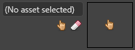

アセットの使用
初級
アセットを使用するには 3 つの方法があります。
- エンティティ コンポーネントでアセットを参照します
- 他のアセットでアセットを参照します
- コードからアセットをロードします
コンポーネントでアセットを参照する
多くの種類のコンポーネントはアセットを使用します。たとえば、モデル コンポーネントはモデル アセットを参照します。
アセットを使用するコンポーネントの［Property grid］にはアセット ドックがあります。

アセットをエンティティ コンポーネントに追加するには、［Property grid］のコンポーネント プロパティのアセット ドックにアセットをドラッグします。テキスト フィールドまたは空のサムネイルにアセットをドロップできます。
または、 (［Select an asset］) をクリックします。
(［Select an asset］) をクリックします。
［Select an asset］ウィンドウが開きます。
Note
［Select an asset］ウィンドウには、コンポーネントから予想される種類のアセットだけが表示されます。たとえば、コンポーネントがオーディオ リスナーの場合、ウィンドウにはオーディオ アセットだけが表示されます。
コンポーネントにアセットを追加すると、アセット ドックにアセットの名前とサムネイル画像が表示されます。
他のアセットでアセットを参照する
アセットでは他のアセットを参照できます。たとえば、モデル アセットでマテリアル アセットを使用する場合があります。
アセットを空のコンポーネントに追加する (前述) のと同じ方法で、アセットの参照をアセットに追加できます。
参照をクリアする
アセットの参照をクリアするには、アセット ドックで  (［Clear reference］) をクリックします。
(［Clear reference］) をクリックします。

参照を調べる
Game Studio の右下隅にある［References］で、選択されているアセットでの参照を調べることができます。
*［Referencees］タブには、選択されているアセットによって参照されているアセットが表示されます。 *［Referencers］タブには、選択されているアセットを参照しているアセットが表示されます。
Tip
［References］タブが表示されない場合は、［View］>［References］に表示されていることを確認します。
コードからアセットをロードする
実行時にアセットをロードしてスクリプトで使用することができます。
コード例
このスクリプトは、実行時にモデルをロードして、それをシーンに追加します。
// モデルをロードする (URL を有効な URL で置き換える)
var model = Content.Load<Model>("AssetFolder/MyModel");
// シーンに追加する新しいエンティティを作成する
Entity entity = new Entity(position, "Entity Added by Script") { new ModelComponent { Model = model } };
// 新しいエンティティをシーンに追加する
SceneSystem.SceneInstance.RootScene.Entities.Add(entity);
Tip
アセットの URL を調べるには、Game Studio で、アセットをマウスでポイントします。ツールヒントにアセットの URL が表示されます。 通常、URL の形式は <アセット フォルダー>/<アセット名> です。
Warning
スクリプトからアセットをロードするときは、次のようにします。
- 「アセットを管理する」で説明されているように、アセットをビルドに組み込みます
- シーン内のエンティティにコンポーネントとしてスクリプトを追加します
必要のないアセットをアンロードする
アセットをコードからロードする場合は、不要になったアセットをアンロードする必要があります。アンロードしないと、アセットはメモリ内に留まり、GPU を浪費します。
アセットをアンロードするには、Content.Unload(myAsset) を使用します。